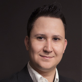

Vinicius Ricardo Martins | WDD 130
I am Vinicius Martins, a Software Developer with experience across the entire development cycle both on the backend and on the frontend in the technologies and languages Spring Boot, Java, Vue js, Javascript, HTML, CSS, PHP, TDD, Docker, CI/CD, MySQL and Postgres. I am studying new technologies to improve the development in programming languages and become a fullstack developer more capable and agile. The most recent achievement is my participation in a Bootcamp Spring Boot Java with over 160 hours. I have experience working in a multicultural and multifunctional team as well as leader or led. I look for opportunities for both personal and professional growth by working with trained professionals and on challenging projects that motivate me to reach my full potential.